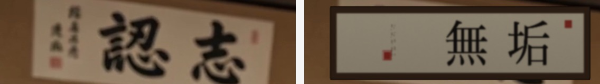

Я посмотрел ролики покадрово целиком и разобрал сценарий. Слева — текущее (с ошибкой), справа — исправленное. Включи звук — слышно и аудио.
4 ошибки текста: あなたのトルル→あなたのトレー, 熱処理竹籠→熱処理竹, 6ヶ無後→6ヶ月後, подзаголовок AIが逗撹→AIが運営.
Сценарий (плесень у других → «твой поднос ок?» → чистый MUKU + тест водой → отдых → «6 месяцев спустя, чисто») сохранён полностью — я только заменил подписи поверх оригинала.
トルル, 竹籠 (корзина), 6ヶ無後, AIが逗撹.Та же каша на табличке додзё 認志 → 無垢 + фоновые свитки в расфокус.
Сделаю наложением на оригинале после твоего ОК на V13 (метод тот же, объём — ещё одна такая же работа с трекингом, не хочу делать вслепую). Доска/сценарий/10с — останутся оригинальными.
認志 + свитки — бессмысленные иероглифы. Сценарий (удар → доска цела → шок) правильный, его сохраняю.Каша на табличке додзё 認志 → 無垢 (бренд); фоновые свитки-каша (永風流親生乱 / 未瞀軞神) уведены в естественный расфокус.
Метод как в V12: правильный текст наложен поверх твоего оригинала с привязкой к движению камеры (покадровый трекинг). Сценарий (удар → пыль → доска ЦЕЛАЯ → шок → продукт), доска, кулак, длина 10с — пиксель-в-пиксель оригинал. Поменялся только текст на стене.
Крупно: было 認志 (каша) → стало 無垢. Слева оригинал, справа исправлено:

認志 + свитки 永風流親生乱 / 未瞀軞神 — бессмысленные иероглифы.Через локальный ASR (faster-whisper, модель medium, японский). Вывод:
| Категория | Ролики | Звук |
|---|---|---|
| Без речи (музыка/SFX) | V02, V07, V10, V11, V13, V14, V15, V17, V18, V19, V21, V23, V24 + новые сумо | ✓ японских ошибок быть не может |
| С AI-озвучкой (японская) | V01, V03, V04, V05, V06, V09, V12, V16, V20, V25 | по смыслу верно: «AIが運営するブランド», «人件費ではなく素材に投資», «熱処理竹», слоганы |
Честная оговорка: ASR распознаёт речь фонетически и шумно (на фоновой музыке), а японские омофоны (人件費/人権費 звучат одинаково) машинно не различить. Поэтому 100% заверить произношение TTS я не могу. Чисто-гарантированно для японского клиента: либо ~10 речевых клипов послушает носитель, либо безопаснее — приглушить AI-озвучку (оставить музыку + текст на экране), убрав риск произношения совсем.